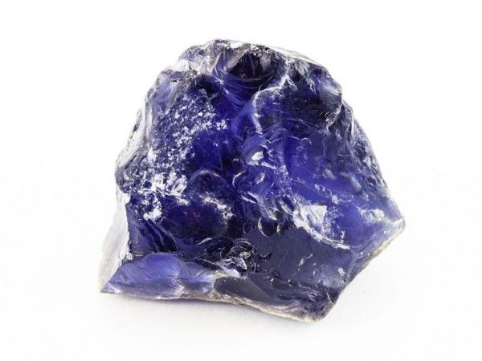

İyolit
İYOLiT / İOLİTE (Vizyon Taşı)
İyolit İçerdiği element ve mineraller yardımı ile kanseri tedavi etmeye yardımcı olan bu taş genelde astroloji ile ilgilenenler ve medyumlar tarafından kullanılır.
Burçları;
- Yay
- Terazi
- Boğa
Uyumlu Olduğu Çakra;
- T 3.Göz Çakrası
- 7.Taç Çakrası
- 5.Boğaz Çakrası